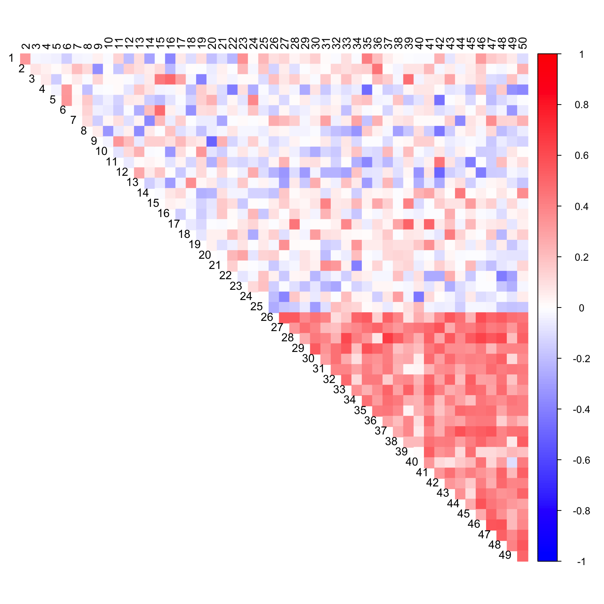

library(corrplot)## corrplot 0.84 loadedlibrary(flashr)n <- 100
p <- 25
noise <- matrix(rnorm(n*p), nrow=n, ncol=p)
Sigma <- matrix(0.04 * 0.8, nrow=p, ncol=p)
diag(Sigma) <- 0.04
data <- cbind(noise, MASS::mvrnorm(n = n, mu = rep(0.5, p), Sigma = Sigma))data_with_na <- apply(data, 2, function(x) { x[sample(1:100, 75)]=NA; return(x)})fl = flash(data_with_na)## fitting factor/loading 1## fitting factor/loading 2cor_mat <- cor(flash_fill(data_with_na, fl), use = "pairwise.complete.obs")
col2 <- c("blue", "white", "red")
corrplot(cor_mat, diag = FALSE,
col = colorRampPalette(col2)(200),
tl.pos = "td", tl.cex = 0.9, tl.col = "black",
rect.col = "white",na.label.col = "white",
method = "color", type = "upper") cor_mat <- cor(data_with_na, use = "pairwise.complete.obs")
col2 <- c("blue", "white", "red")
corrplot(cor_mat, diag = FALSE,
col = colorRampPalette(col2)(200),
tl.pos = "td", tl.cex = 0.9, tl.col = "black",
rect.col = "white",na.label.col = "white",
method = "color", type = "upper") out <- CorShrink::CorShrinkData(data_with_na, ash.control = list(mixcompdist = "normal"))col2 <- c("blue", "white", "red")
corrplot(as.matrix(out$cor), diag = FALSE,
col = colorRampPalette(col2)(200),
tl.pos = "td", tl.cex = 0.9, tl.col = "black",
rect.col = "white",na.label.col = "white",
method = "color", type = "upper") 
This R Markdown site was created with workflowr